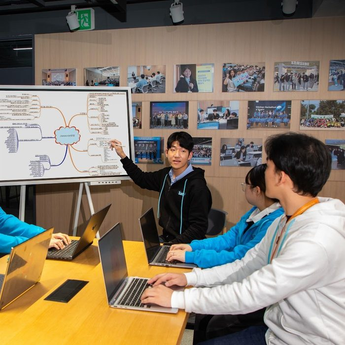
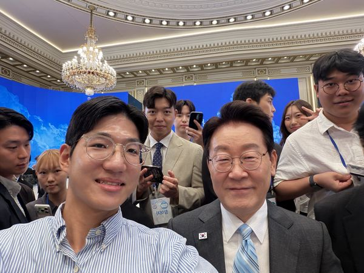
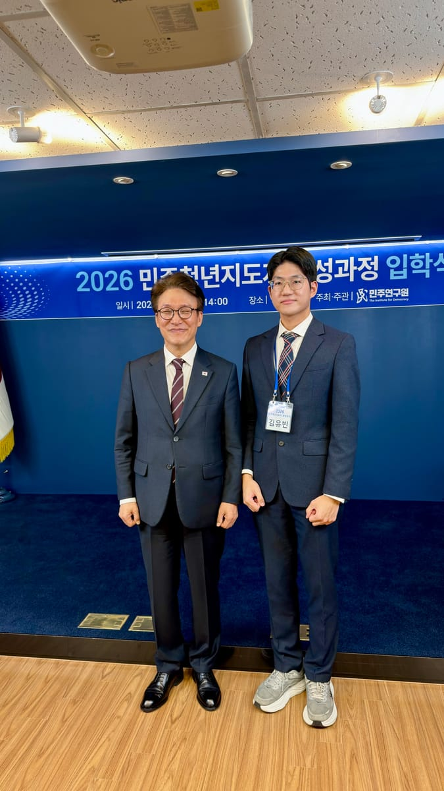
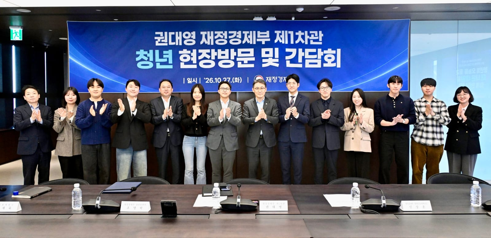

AI 전략AI Strategy
무엇을 먼저 하고 무엇을 AI에 맡길지 정합니다. 광명시흥 3기 신도시 보상자료를 절차와 쟁점별로 구조화했고, 고객 메일 자동 분류에서는 무엇을 ‘급함’으로 볼지 기준을 세웠습니다.
김유빈 Yubin Kim · AI 전략·AX 실행
복잡한 문제를 구조화하고,
기술로 실행합니다.
법률·부동산·정책의 현장에서 AI가 도울 수 있는 일과 사람이 판단해야 할 일을 구분합니다.
법무법인 경국 — 정비사업 AX · 전략기획 AI Strategy · Practical AX · Human Judgment
업무 흐름 · 제약 · 제도 · 이해관계를 먼저 읽습니다.
근거광명시흥 3기 신도시 보상자료를 절차와 쟁점으로 구조화(발표자료 77장)
정의한 문제를 자동화와 제품으로 옮깁니다.
근거경국 AX 3종 · 급여명세서 자동 발송 · 고객 메일 자동 분류 · 직접 만든 도구 4가지
결과를 판단하는 사람이 이해하도록 만들고, 정책 논의의 자리에 나갑니다.
근거변호사 검토로 끝나는 AX 구조 · 국민 대토론회 정책 제안 발표 · 청년 정책 거버넌스
16결과물11배포 · 사내 운영4AI · 데이터 전문교육3수상 · 표창
01 소개 Profile



01 · Profile김유빈 · Yubin Kim — 법무법인 경국
02 · SSAFY 13기프로젝트 아키텍처 발표
03 · Youth Day 2026청와대 청년의날 — 대통령과 함께
02 역량 구조
모든 역량의 깊이가 같지 않습니다. 실제 결과물로 증명한 줄기는 하나이고, 법률·부동산은 그 줄기가 쓰이는 영역, 정책·소통은 넓혀 가는 영역입니다.
실증된 깊이Demonstrated
두 번째 깊이
법률·부동산 ·
제도적 의사결정형성 중
줄기 — 실증된 깊이 Core Depth
무엇을 먼저 하고 무엇을 AI에 맡길지 정합니다. 광명시흥 3기 신도시 보상자료를 절차와 쟁점별로 구조화했고, 고객 메일 자동 분류에서는 무엇을 ‘급함’으로 볼지 기준을 세웠습니다.
반복되는 판단의 앞단을 시스템으로 옮기고, 사람은 기준을 정하는 자리에 남깁니다. 경국 AX 3종 · 급여명세서 자동 발송 · 고객 메일 자동 분류를 만들었고, SSAFY 13기 · 서울대 AIED 4기에서 구조를 익혔습니다.
공공데이터 API와 Google Workspace를 의사결정 가능한 화면으로 번역하고 직접 배포합니다. 전략이 감이 아니라 근거 위에 서도록 데이터 구조를 먼저 설계합니다.
적용 영역 Applied Domain
정비사업의 법률 위험, 토지보상 절차, 청약·공공임대 공고를 실무와 제품으로 다뤘습니다. 법무법인 경국의 송무·사무, 건국대 스마트건설 교육, KREMA 4기, 분양대행자 자격이 바탕입니다.
넓어지는 영역 Expanding Domains
국민 대토론회에서 정책을 제안·발표했고, 서초청년네트워크 9기 운영위원회 부위원장 · 청년정책 패널로 활동합니다. 참석과 제안은 정책 결정이 아니라 논의에 참여한 기록입니다.
서울대 AIED 4기에서 교수법을 익혔고, 박람회 시연 · SSAFY 홍보 앰배서더 · 서울시민기자단으로 기술과 정책을 이해하기 쉬운 말로 옮겨 왔습니다. 강의는 제안 커리큘럼입니다.
전략 판단의 기록 Strategy Cases
Technology for Execution. Judgment for Direction.
시스템은 분석과 실행을 돕습니다. 그러나 결과가 큰 결정 — 무엇을 문제로 삼을지, 이해관계가 부딪칠 때 무엇을 앞세울지, 어떤 위험을 받아들일지 — 은 그 결정에 책임지는 사람이 내립니다. 직접 만든 두 시스템에서 그 경계가 어디인지 확인했습니다.
실지조사 절차와 감정평가·공간정보 관련 조문, 지목 28종을 교재로 읽고 외우던 학습.
3D로 옮긴 서울을 걸으며 의뢰 수임부터 등기촉탁까지 5단계를 직접 수행하고, 조문 카드와 지목을 장소에서 수집.
어떤 절차를 어떤 순서로 밟아야 평가가 성립하는지, 어느 조문을 어느 현장에 붙여야 기억되는지는 감정평가 실무를 알아야 설계할 수 있습니다.
Playable — 직접 만든 것을 직접 해보기
감정평가 실무를 그대로 옮겼습니다. 절차를 설명하는 대신 절차를 걷게 만들었습니다.
담당자가 메일함을 직접 확인하며 사안의 우선순위를 판단하던 업무.
메일이 들어오면 자동으로 모아 급한 순서대로 1차 분류.
무엇을 리스크로 볼지 정하는 건 결국 사람 몫이고, 그 기준은 법무 감각에서 나옵니다.
두 경우 모두 도구가 맡은 일은 빨라졌고, 기준을 정하는 일은 사람에게 남았습니다. 그 기준을 세우고 실행까지 옮기는 것이 제 일입니다.
03 법무법인 경국 AX 지휘실 Gyunggook AX Intelligence Command
법률 업무의 핵심은 문서를 더 빨리 쓰는 데만 있지 않습니다. 방대한 기록에서 중요한 사실을 찾고, 주장과 증거를 잇고, 법령의 근거를 확인하고, 절차와 기한을 놓치지 않는 데 있습니다.
법무법인 경국에서 전략기획과 송무 · 사무, 조직 운영을 겪으며 발견한 반복 업무를 출발점으로 자료를 구조화하고 검토 과정을 자동화해 왔습니다. 정비사업 AX 를 바탕으로 송무기록 분석 · 계약 검토 · 법률 리서치 · 사건 관리로 적용 범위를 넓히고 있으며, 그 확장은 아래의 개인 구현 공개 시연으로 먼저 보여 드립니다.
기술은 정보를 정리하고 검토를 돕지만, 최종 법률 판단은 변호사가 내립니다.
가상 시연 Conceptual demo — 실제 사업지 · 조합원 · 계약 자료가 아닙니다
RE:INTELLIGENCE 법령 변경 알림 —
실무 01 · Practice
분석 · 발표 자료 77장 — 소프트웨어 시스템이 아닙니다
보상 관련 발표자료 77장을 만들며 감정평가 → 보상협의 → 재결로 이어지는 절차와 쟁점을 정리했습니다.
실무 02 · Practice
사내 운영 · 급여 정보를 다루어 화면과 코드는 비공개
네이버웍스 메일 API로 급여명세서의 생성과 발송을 자동화해, 반복되던 발송 절차를 표준화했습니다.
운영 흐름 Operational Workflow
회사로 들어오는 고객 메일을 자동으로 모아 '지금 답할 것 · 오늘 안에 볼 것 · 광고처럼 넘겨도 되는 것'으로 나눠 보여 주는 업무 화면. 담당자는 위에서부터 차례로 처리하면 됩니다.
설계 원칙무엇을 '급함'으로 볼지 기준은 사람이 정하고, 1차 분류만 컴퓨터에 맡겼습니다.
시스템 바로가기의뢰인 · 사건 정보와 사내 화면은 공개하지 않습니다.
04 직접 만든 도구
문제를 발견하는 데서 끝내지 않고, 혼자 끝까지 만들어 배포한 개인 제품 네 가지입니다. 회사 시스템이 아닙니다.제품마다 어떤 문제가 있었는지 → 무엇을 만들었는지 → 어떻게 쓰는지 순서로 적었습니다. 법무법인 경국의 AX 는 바로 위에 있습니다.
The Housing Landscape지도 위 필지에서 아파트 단지가 솟고, 위치 표시가 꽂힙니다개념도 · Concept
직접 만들어 사용Vercel 배포 완료01 / 04
이어지는 역량흩어진 주거 정보를 사용자의 판단 기준으로 다시 묶기 — 부동산 영역의 의사결정 지원
설계 원칙자격·예산·선호 적합도·마감 긴급도를 한 점수로 섞지 않도록 분리 설계 — 미확인 자격은 불충족으로 단정하지 않고, 당첨 확률은 산출하지 않는다.
The Regulatory Landscape개발 대상지 위로 법률안 · 법령 · 판례가 층으로 내려앉습니다개념도 · Concept
직접 만들어 사용Vercel 배포 완료02 / 04
이어지는 역량흩어진 법률 정보를 리서치 흐름으로 — 출처와 연결 상태를 함께 공개
설계 원칙출처 없는 예시 수치는 넣지 않는다 — 인증키가 없거나 수집에 실패한 값은 '인증키 필요'·'불러오지 못함'과 이유를 그대로 보여 주고, 지방회 합계가 맞지 않으면 화면에 올리지 않는다.
The Agent Workspace사무실 평면 위 네 역할 사이로 업무가 흐르고, 승인 책상에서 끝납니다개념도 · Concept
직접 만들어 사용Vercel 배포 완료03 / 04
이어지는 역량배정 · 실행 가시성 · 사람의 승인 — AX 를 운영하는 원칙 그 자체
설계 원칙에이전트가 한 일을 사람이 검증·승인해야 끝나는 구조 — 시연 모드의 가상 활동은 실제 성과 지표에 합산하지 않는다.
The National Information Landscape정책 · 국회 · 경제 · 시장 네 갈래가 한 판으로 모입니다개념도 · Concept
직접 만들어 사용Vercel 배포 완료04 / 04
이어지는 역량정책과 시장 정보를 한 장의 개관으로 — 공공 영역의 흐름 읽기
설계 원칙수집이 실패해도 화면이 비지 않게 — CDN 20분 캐시와 stale-while-revalidate로 즉시 응답하고, 실패하면 저장된 스냅샷으로 대체. 포털은 기사를 옮겨 실을 뿐 매체가 아니므로 출처·언론사 수에서 뺐다.
05 정책 참여 Policy Participation & Public Deliberation
법률 · 부동산 현장의 문제는 결국 제도와 이해관계의 문제로 이어집니다. 그래서 소프트웨어를 만드는 데서 멈추지 않고, 정책 논의의 자리에 나가 듣고, 제안하고, 운영에 참여합니다.
참석과 제안은 정책 결정이 아닙니다. 채택 여부는 적지 않습니다.
연구 · 실험 기록 Research Archive
학습용 시뮬레이터 · 개인 실험 · 제안서 · 생성형 AI 콘텐츠입니다. 네 가지 도구, 경국 AX 와는 성격이 다른 기록이라 따로 모았습니다.
광화문에서 잠실까지 서울을 직접 걸으며 의뢰를 수행하는 3D 학습 게임. 의뢰 수임 → 현장조사 → 지적측량 → 토지이동 → 등기촉탁의 5단계를 그대로 따라가고, 조문 카드 24장과 지목 도감 28종을 장소에서 수집한다. 감정평가에 관한 규칙·공간정보관리법·건축법·민법 조문을 현장 상황에 붙여 기억하도록 설계.
6문항 피부 진단으로 성분 18종을 점수화해 서울·도쿄·뉴욕의 루틴 철학별로 3–5종을 처방하는 웹 서비스. 루틴 체크, 2주 간격 도입 플랜, 레이어링 궁합표, 성분 사전을 KO / EN으로 제공.
"지금, 어떤 마음이신가요?"에서 시작해 마음 상태·주제별로 성경 말씀과 인문학·철학의 문장을 이어 주는 서재형 PWA. 오늘의 말씀, 말씀·인문학 서재, 묵상 노트·기도 제목·말씀 암송·통독 진도를 쌓는 '나의 성소', 마스코트 등불이(시편 119:105)가 안내하는 상담 챗봇까지 설계·구현.
Google Korea(YouTube)를 독자로 쓴 PRD 형식의 외부 기능 제안서. 댓글을 관계의 입구로 바꾸는 4개 기능, 한국 우선 파일럿, Premium·Lite 패키징, HEART 지표와 실험 설계를 담았다.
주문 화면이나 영수증을 찍으면 식재료 보관 기한과 생활용품 재구매 시점을 셈해 알려 주는 자취생·주부용 살림 기록 서비스. 구역별 곳간, 자동 장보기, 월별 가계, 달력 알림까지 설계·구현.
청약홈 OpenAPI로 분양정보·지역별 경쟁률·당첨자 가점 통계를 모으고, AI 당첨 확률 계산기와 청약 핫플레이스 지도를 더한 시장 대시보드.
GPT Image-2, Suno AI, ElevenLabs를 결합하여 2026 전국동시지방선거 결과를 분석·시각화한 인스타그램 카드뉴스 6종과 내레이션 영상. 사회학적 분석을 2030 세대의 소비 포맷으로 옮긴 생성형 AI 미디어 작업.
Google Vids의 Veo 3 모델을 활용하여 주거 브랜드 '르엘 성수'의 공간 가치를 영상 언어로 구성한 브랜드 필름. 텍스트 프롬프트만으로 영상을 생성·편집하여 부동산 영상 제작 과정을 간소화.
메종 루이비통의 헤리티지와 장인정신을 절제된 무드의 시네마틱 광고로 재해석한 브랜드 캠페인 필름. 텍스트 프롬프트 기반의 생성형 AI만으로 럭셔리 광고 특유의 질감과 격조를 구현.
복수의 생성형 AI 도구를 활용하여 부동산 청약 데이터와 플랫폼 사용성을 대중이 이해하기 쉽도록 구성한 영상·오디오 브랜딩 프로젝트.
06 성장 경로
연대순 목록보다 먼저, 다루는 문제가 어떻게 커져 왔는지 봅니다. 시기는 서로 겹칩니다 — 아래 단계는 순서가 아니라 문제의 복잡도입니다.
삼성청년SW·AI아카데미(SSAFY) 13기 이수(2025) · 서울대 AIED 4기 수료 · KREMA 상담 RAG 실습 · 건국대 스마트건설기술교육 · 서울 핀테크 아카데미 14기 수료
법무법인 경국 — 정비사업 AX 3종 · 급여명세서 자동 발송 · 고객 메일 자동 분류 · 보상자료 77장
집캐치 · 법조시장 한눈에 · Atelier AX · 국정 한눈에 — 직접 기획 · 개발 · 배포
국민 대토론회 정책 제안 발표 · 서초청년네트워크 부위원장 · 정책 간담회 · 공론장
기술 구현 · 법률 · 부동산의 산업 이해 · 제도에 대한 이해를 함께 갖추고, 결과에 책임지는 결정을 다루는 자리 — 앞으로의 방향입니다.
지향 · 진행 중Highlight — 2026
청년 대표로 초청되어 ‘2026 청년의 날 오픈마이크’ 현장에 참석했습니다. 청년 정책의 방향과 현장의 과제를 국정 최고 의사결정 단위에서 직접 듣고 교류한 기록입니다.
사진 ⓒ연합뉴스 · 방송 화면 ⓒ전주MBC · 현장 사진 직접 촬영
현장 사진 전체 보기청와대 청년의날, 그다음 장 — 현장 일지

Field Diary — 2026. 10. 24 입학 · 진행 중
민주연구원이 주최·주관하는 ‘2026 민주청년지도자 양성과정’에 입학했습니다. 입학식에서 김민석 당대표·강득구 민주연구원장과 함께했고, 이광재 예산결산특별위원장의 특강에서 직접 질문했으며, 박홍근 기획예산처 장관과도 현장에서 함께했습니다. 청년의날에 들었던 정책의 언어를 이번에는 직접 배우고 토론하는 자리입니다.
현장 사진
입학식 사진 전체 보기
Field Diary — 2026. 10. 27 간담회 참석
권대영 재정경제부 제1차관의 취임 후 첫 현장 행보로 마련된 청년 간담회에 법무법인 경국 소속으로 참석했습니다. 간담회에 앞서 SVC Seoul 입주 청년 창업기업의 AI 기반 주거지 탐색 · 공공사업 검색·매칭 서비스 시연 참관이 있었고, 대학생 · 창업가 · 직장인 청년들이 주거 · 일자리 · 서민금융에 대한 현장 의견을 전했습니다.
현장 사진
간담회 사진 전체 보기Professional
정비사업의 법률·경제 위험을 다루는 AX를 기획·구축 — 정비사업 법률 리스크 관제(RE:INTELLIGENCE), 조합 총회결의 하자 사전검증, 계약변경 AI Redline. 광명시흥 3기 신도시 보상자료 분석·구조화(발표자료 77장)를 함께 수행.
AX 현황판 보기한국부동산마케팅협회 인턴으로 근무했습니다(2026. 4 ~ 2026. 6).
AI · Data Education
AI 데이터 매니지먼트 과정 네 개 트랙 중 트랙3을 수료했고, 트랙1·2·4를 수강 중이거나 수강할 예정입니다.
서울특별시와 금융 교육기관이 협약해 운영하고 금융투자협회 금융투자교육원이 진행하는 핀테크 전문교육을 약 11주 동안 금 · 토요일에 이어 들었습니다. 금융 · 디지털 서비스의 구조와 산업을 이해하는 범위를 넓힌 과정입니다.
문서 검색 · 벡터 DB · 서버리스 RAG API · 상담 화면을 하나로 잇는 구축 실습입니다. 부동산 상담이라는 도메인에 검색증강생성(RAG)을 연결해 본 교육으로, KREMA AI 마케팅 기획자 양성 4기와는 별개입니다.
인공지능 메커니즘의 비즈니스 도메인 최적화 적용, 구조화된 프롬프트 엔지니어링 아키텍처의 이해와 교수법 체화.
인공지능 기반의 부동산 시장 데이터 분석과 표적 세그먼트 도출을 학습하고, 매체별 디지털 마케팅 전략 수립 및 자동화 설계 역량을 습득.
건국대학교 대학일자리플러스사업단과 한국건설기술인협회가 함께 연 프로그램에서 BIM · 스마트 건설안전 · 드론 · 건설로봇을 현업 전문가와 연구자에게 배웠습니다. 건설산업의 데이터와 현장 기술을 이해하기 위한 교육이며, 법정 건설기술인 의무교육이 아닙니다.
소프트웨어 아키텍처와 인공지능 알고리즘을 실무 프로젝트 중심으로 학습하여 엔지니어링 역량을 내재화.
Leadership & Public
권대영 재정경제부 제1차관이 서울 마포구 창업기업 지원시설 SVC Seoul에서 연 청년 현장방문 및 간담회(2026. 10. 27)에 법무법인 경국 소속으로 참석했습니다. 차관 취임 후 첫 현장 행보로 마련된 자리로, 대학생 · 창업가 · 직장인 청년들이 주거 · 일자리 · 서민금융 등 3대 사회정책에 대한 현장 의견을 전했습니다.
간담회 현장 보기‘청년이 생각하는 성평등정책, 어디까지?’를 주제로 연세대 백양누리 그랜드볼룸에서 열린 공개형 공론장(2026. 10. 25)에 참석해 청년 세대의 시각으로 정책 토론에 함께했고, 현장에서 성평등가족부 장관과 함께했습니다.
공론장 현장 보기민주연구원이 주최·주관하는 2026 민주청년지도자 양성과정에 입학(2026. 10. 24)해 12월 13일까지 정책·리더십 과정을 이어 가고 있습니다. 입학식에서 김민석 당대표·강득구 민주연구원장과 함께했고, 이광재 예산결산특별위원장의 특강에서 직접 질문했으며, 박홍근 기획예산처 장관과도 현장에서 함께했습니다.
입학식 현장 보기코엑스 D홀 KREMA AI 전시관 C-10 부스에서 청약·공공임대 맞춤 추천 서비스 집캐치와 3D 감정평가 필드워크를 소개하고, 제작 배경과 작동 방식을 설명하며 관람객 질문에 답했습니다.
박람회 현장 보기〈2026 세대·젠더 분야 현장형 국민대화 국민 대토론회〉(2026. 9. 29 · aT센터) 자산 분야 트랙에서 청년 미래배당펀드팀으로 ‘청년 초과세수 미래배당펀드’를 제안·발표. 일회성으로 소진되는 초과세수를 청년 세대가 함께 불리는 자산으로 전환하는 구조를 설계.
대통령이 주관한 청년의날 기념행사에 청년 대표로 초청되어 참석. 청년 정책의 방향과 현장의 과제를 국정 최고 의사결정 단위에서 직접 청취하고 교류.
대통령 주관 행사 현장 사진 보기서초구청 위촉식(2026. 9. 18)을 거쳐 가치디자인단으로 위촉되어 구정 현장 활동에 참여하고 있습니다.
서초구 청년 정책 거버넌스의 운영위원회 부위원장으로서 분과 의제 설정과 위원회 운영을 총괄하고, 현장의 목소리를 제도로 잇는 민관 협력을 주도.
국민권익위원회 청년정책 패널로 활동하며, 청년의 시각에서 정책 과제에 의견을 내고 있습니다.
국무조정실 온라인 청년참여단으로서 청년 정책 과제에 대한 의견 수렴과 정책 제안에 참여하며, 온라인 공론장을 통해 청년 세대의 목소리를 정부 정책 과정에 전달.
공공 영역의 미디어 콘텐츠를 구성·편집하고 시정(市政) 현안을 분석하여 정책 제안 과정에 참여.
SSAFY 공식 홍보 앰배서더로 교육 과정과 성과를 콘텐츠로 알리고, 지원자 대상 커뮤니케이션과 대외 홍보 활동을 수행.
독일 베를린에서 유럽 선진 기업의 에너지·인프라 운영 체계와 국제 실무 표준을 조기에 접한 경험.
Honors
軍·官·學 주관 2023 강원열린군대 스타트업 프로그램 성취도평가에서 팀 Home_Ally로 2위 입상(2023. 12. 31). HVAC 기술에 기반한 리스크 관리 아이디어를 제안하고, 비즈니스 모델의 타당성을 공식 심사에서 검증.
상장 원본 보기기초군사훈련 과정에서 분대의 통솔과 임무 수행 성과를 인정받아 최우수 분대로 선정되었으며, 육군훈련소장(소장)의 상장을 수상.
상장 원본 보기軍 특성화고 현장실습 기간 중 희생정신과 학업성적 우수로 타의 모범이 되어 육군정보통신학교장(준장)으로부터 상장을 수상(2022. 7. 1, 제183호).
기록
현장에서 보고, 만들고, 기록합니다. 일한 과정과 생각은 세 채널에 먼저 올라옵니다.
AI 전략기획 · 청년정책. 법무법인에서 AI로 업무를 자동화하며, 부동산·정책 현장의 질문과 독서·예술의 사유를 기록합니다.
현장에서 보고 들은 것을 적고, 판단의 근거로 다시 접목합니다. AI 전략 기획 · 청년 정책 · 재테크 및 부동산.
생성형 AI로 만든 카드뉴스와 시네마틱 영상을 올립니다. 분석을 2030 세대가 실제로 보는 형식으로 옮기는 채널입니다.
Instagram 방문Visual Journal — 현장 기록
포트폴리오에 실린 본인 사진입니다. Instagram 게시물을 옮겨 온 것이 아니라, 각 사진의 원래 기록(갤러리 · 블로그 · 보도)으로 이어집니다.
최근 글은 각 채널 RSS 기준(2026.10.23) · 채널 이름을 누르면 새 창에서 열립니다.
강의 · 소통
쓸모 있는 시스템은 쓰는 사람이 이해해야 자리 잡습니다. 실무에서 만든 것을 가르칠 수 있는 단위로 옮긴 제안 커리큘럼입니다.
본업은 AI 전략 컨설팅입니다. 강의는 실무에서 직접 만들고 운영한 경험을 나누기 위해 별도로 설계한 프로그램으로, 아직 출강 이력은 없습니다. 커리큘럼과 근거를 먼저 공개해 두고, 첫 강의가 진행되면 이력에 연도와 함께 추가하겠습니다. 강의 의뢰는 언제든 받습니다.
만들어 본 사람만 가르칠 수 있는 것이 있습니다.
SSAFY 13기의 엔지니어링 훈련, 서울대 AIED 4기의 프롬프트 아키텍처와 교수법, KREMA 4기의 시장 데이터 전략 — 배운 것을 실제로 만들어 운영해 본 뒤에 강의 모듈로 옮겼습니다. 현재 AI 두 트랙과 부동산·자산관리 한 트랙, 열두 과정의 커리큘럼을 설계해 두었습니다.
개념부터 에이전트 설계까지. SSAFY 13기의 엔지니어링 훈련과 서울대 AIED 4기의 프롬프트 아키텍처·교수법을 실무 언어로 옮긴 네 과정입니다.
모델이 어떻게 답을 만드는지 알면, 어디까지 맡길지 판단할 수 있습니다.
서울대 AIED 4기 — AI 교육 전문가 과정
이 과정 의뢰하기좋은 프롬프트는 잘 쓴 문장이 아니라 잘 설계된 구조입니다.
서울대 AIED 4기 — 구조화된 프롬프트 아키텍처
이 과정 의뢰하기아이디어에서 배포까지, AI와 대화하며 실제 도구를 완성하는 과정입니다.
SSAFY 13기 — 소프트웨어 아키텍처 실무 프로젝트
이 과정 의뢰하기모델 자체보다, 모델에 무엇을 쥐여주느냐가 결과를 가릅니다.
GWS · NAVER WORKS API 연동 경험
이 과정 의뢰하기직접 설계·배포해 운영 중인 시스템에서 나온 네 과정. KREMA 4기의 시장 데이터 전략과 현장 산출물을 사례로 다룹니다.
반복 업무를 진단하고, 무엇을 자동화할지 정하는 기준을 세웁니다.
법무법인 경국 — 송무·사무 프로세스 혁신 실무
이 과정 의뢰하기공개된 데이터를 의사결정이 가능한 화면으로 바꾸는 과정을 처음부터 끝까지 다룹니다.
KREMA 4기 — AI 기반 부동산 시장 데이터 분석
이 과정 의뢰하기프롬프트 구조로 영상을 만들고, 톤을 지키는 판단은 사람이 합니다.
KREMA 4기 — 매체별 디지털 마케팅 전략
이 과정 의뢰하기전문적인 내용이 닿지 않으면 없는 것과 같습니다. 전달의 문법을 다룹니다.
서울시민기자단 · 연합뉴스TV · 청년 정책 거버넌스
이 과정 의뢰하기AI와 나란히 서는 두 번째 전문 영역. 분양대행자 자격과 KREMA 4기, 법무법인 경국의 송무 실무, 정비사업 데이터 자동화와 부동산 직무 체험관 설계에서 나온 네 과정입니다.
월세 합계가 아니라 순영업소득(NOI)으로 자산을 봅니다. 공실·경비·환원율 세 숫자로 설명하는 법을 익힙니다.
감정평가사 필드워크 — 자산관리·리츠 직무 체험 설계
이 과정 의뢰하기근거 없는 '확정'·'보장' 문구가 계약 분쟁이 되는 지점을 미리 막고, 상담을 데이터로 설계합니다.
분양대행자 자격 · KREMA 4기 부동산 마케팅 기획자 과정
이 과정 의뢰하기대항력·확정일자·등기부를 잔금일 기준으로 다시 확인하는 절차를 익힙니다. 법률 자문이 아닌 점검 교육입니다.
법무법인 경국 송무 실무 · 필드워크 공인중개사 트랙 설계
이 과정 의뢰하기용적률·사업수지를 공공데이터로 확인하고 보상 절차의 쟁점을 짚어, 사업성을 감이 아니라 숫자로 판단합니다.
광명시흥 3기 신도시 보상자료 분석(발표자료 77장) · 건국대 스마트건설
이 과정 의뢰하기